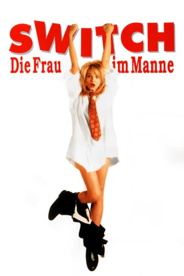
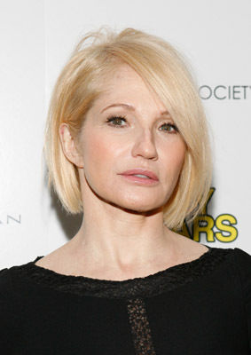
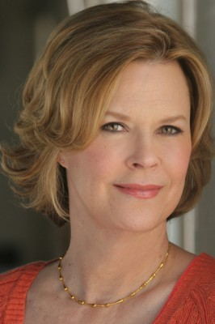
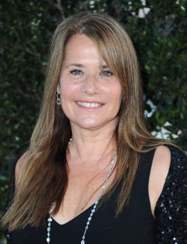
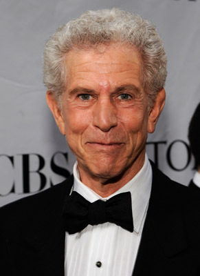
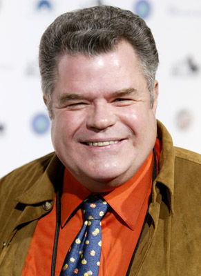
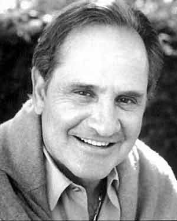
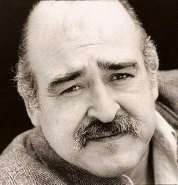

#11522 Switch - Die Frau im Manne
Alternativ: Switch (Englischer Titel)
 
 IMDB-Wertung: 5.8 / 10
IMDB-Wertung: 5.8 / 10  Tomatometer: 33
Tomatometer: 33  Metascore: 0
Metascore: 0 
Der langgeübte Griff geht ins Leere. Entsetzt stellt der erfolgsverwöhnte Werbetexter Steve fest, dass er sich zukünftig zum Pinkeln hinsetzen muss. Der Blick in den Spiegel gibt ihm den Rest. Er ist eine Frau – und was für eine! Langsam begreift er. Seine drei Geliebten hatten ihn als miesen Super-Macho beschimpft, ersäuft und erschossen. An der Himmelstür wurde er abgewiesen. Erst soll er in Frauengestalt beweisen, dass es ein weibliches Wesen gibt, das ihn wirklich geliebt hat. So stöckelt Steve als Frau mit einem tollen Körper, wohlgeformten Beinen und einem einzigartig sinnlich-schiefen Mund durchs neue Leben. Die Männerwelt ist verblüfft. Dieses Weib redet, liebt, säuft, prügelt und bewegt sich wie ein richtiger Kerl – eine Bombe auf Stöckelschuhen, eine Sensation in Body-Stockings mit einer Faust wie ein Dampfhammer.
Jahr: 1991
Dauer: 98 Minuten
FSK: 12
Land: USA Studio: Warner Bros.Tonspuren: DD5.1 - ,
Untertitel:
Auflösung: 1080p (1920x1080) Größe: 5867 MB
Genre: Komödie, Fantasy
Regisseur: Blake Edwards
Drehbuch: Blake Edwards
Soundtrack: Henry Mancini
Darsteller:
-  Ellen Barkin als Amanda Brooks
 Jimmy Smits als Walter Stone
Jimmy Smits als Walter Stone-  JoBeth Williams als Margo Brofman
-  Lorraine Bracco als Sheila Faxton
-  Tony Roberts als Arnold Freidkin
- Perry King als Steve Brooks
- Bruce Payne als The Devil
- Lysette Anthony als Liz
- Victoria Mahoney als Felicia
- Basil Hoffman als Higgins
 Catherine Keener als Steve's Secretary
Catherine Keener als Steve's Secretary- Kevin Kilner als Dan Jones
 David Wohl als Attorney Caldwell
David Wohl als Attorney Caldwell- James Harper als Lt. Laster
 John Lafayette als Sgt. Phillips
John Lafayette als Sgt. Phillips- Jim J. Bullock als The Psychic
- Joe Flood als Mac the Guard
- Emma Walton Hamilton als Fur Protestor
- Yvette Freeman als Mae the Maid
 Téa Leoni als Dream Girl
Téa Leoni als Dream Girl- Rick Aiello als Wiseguy at Duke's
- F. William Parker als Barber
- David Gale als Doctor
- Virginia Morris als Assistant D.A.
- Robert Clotworthy als Bailiff
- Lily Mariye als Nurse
- William Shockley als Party Guest
- Dena Burton als Party Guest
- Jacki Moen als Girl at City Grille
-  Michael Badalucco als Hard Hat
- Gregory J. Barnett als Thug at Duke's
-  Fred Lerner als Thug at Duke's
- Linda Dona als Gay Club Patron
- Jim Lovelett als Jogger
- Robert Towers als Mental Patient
-  Tony Genaro als Mental Patient
- Lenny Citrano als Basketball Player (uncredited)
- Diana Chisney als Mrs. Weatherspoon
- Louis Eppolito als Al the Guard
- Dennis Paladino als Duke
- Ben Hartigan als Minister
- Jessie Jones als Arnold's Secretary
- Herb Tanney als Judge Harcrow
- Patricia Clipper als Girl in Elevator
- Robert Elias als Photographer
- Michelle Wong als Photo Assistant
- Marti Muller als Woman Client
- Mindy Lawson als F & B Model
- Kimberly Oja als F & B Model
- Teri Gold als F & B Model
Datei: X:\1991\Switch - Die Frau im Manne (1991, FSK12, 1920x1080).mkv seit 22.07.2019
Festplatte: Gemischt-01+Anime
 Es gibt insgesamt 53 Filme in der Gruppe '1991'
Es gibt insgesamt 53 Filme in der Gruppe '1991'